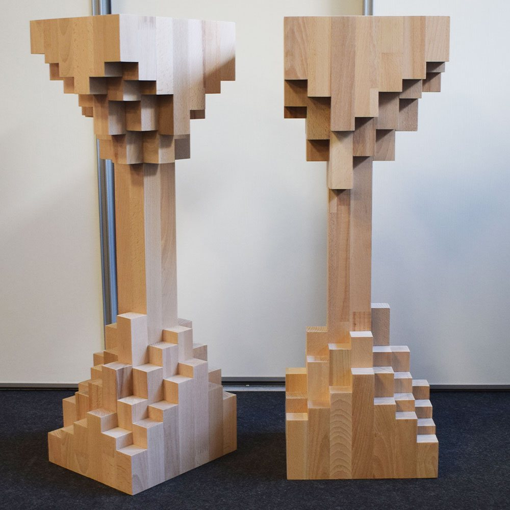
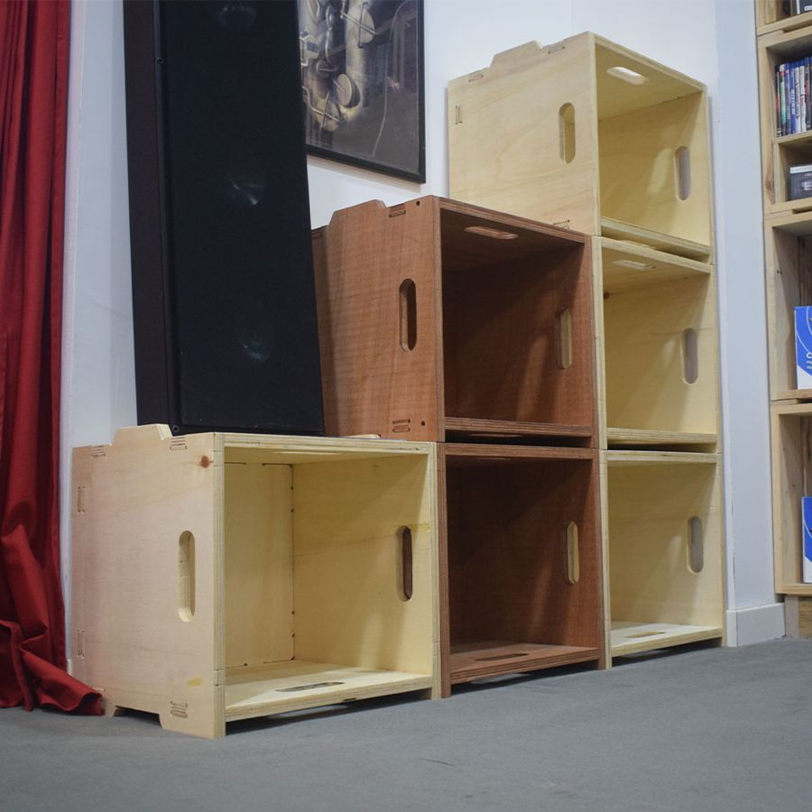
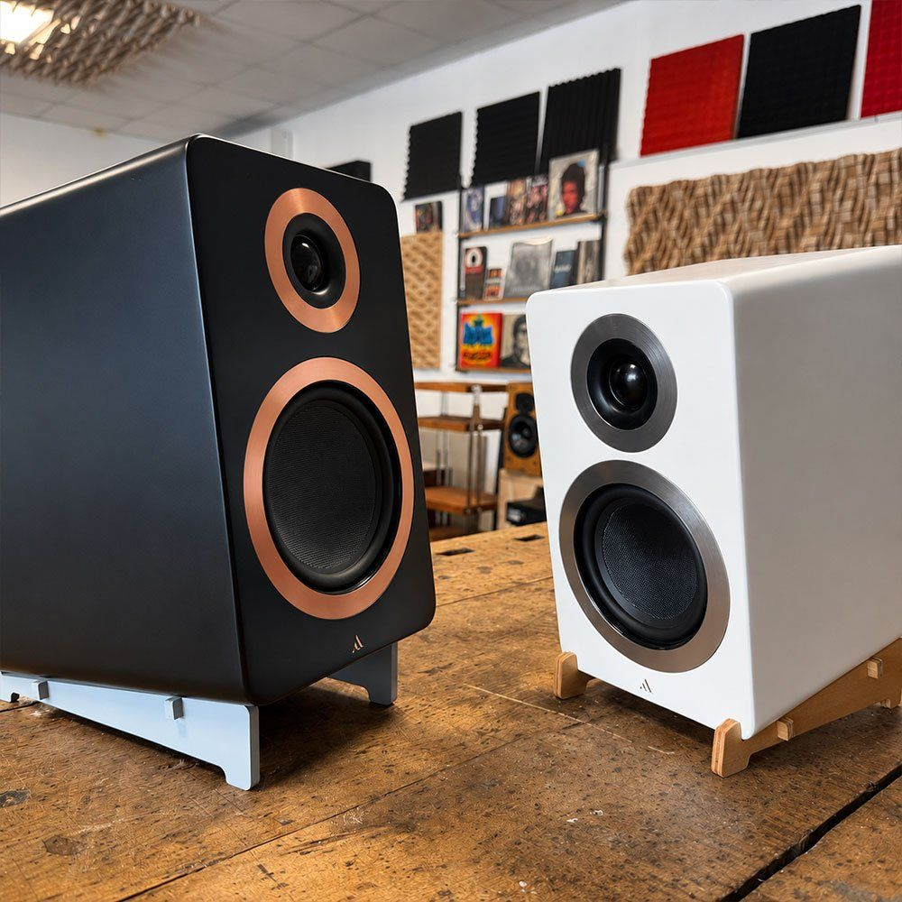
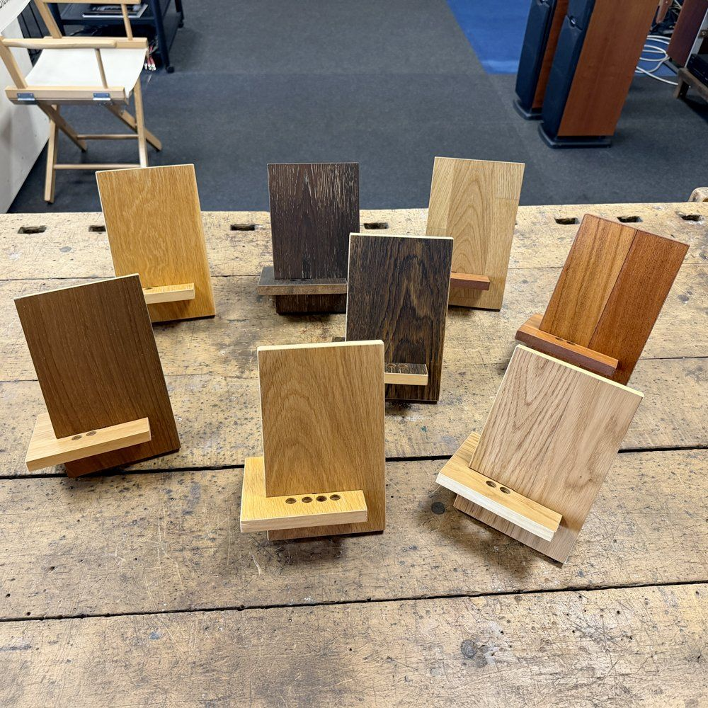

Su misura · Fatto a mano a Cesena
Mobili hi-fi su misura, costruiti sul tuo impianto.
Mobili, stand e pannelli su misura per il tuo soggiorno o la tua sala d'ascolto. Parto dagli apparecchi che hai e dallo spazio in cui li vuoi mettere. Disegniamo il mobile insieme, poi lo costruisco a mano nel mio laboratorio di Cesena e te lo spedisco ovunque in Italia.
Cosa posso costruire.
Pezzi nuovi, progettati da zero sulle misure e nelle essenze che scegli tu. Le foto mostrano alcuni dei miei lavori.

Mobili hi-fi e rack
Per giradischi, amplificatori, lettori e streamer, con i ripiani all'altezza giusta e lo spazio per i cavi.

Stand per diffusori
Portano le casse all'altezza delle orecchie, sulla misura del diffusore e della stanza.

Pannelli acustici
Per correggere l'acustica della stanza o solo per arredarla, nelle misure che servono alla tua parete.

Porta vinili e porta CD
Contenitori per la collezione, dimensionati sulle copertine, sui CD e sulla parete che hai a disposizione.

Supporti inclinati per diffusori
Inclinano le casse verso il punto d'ascolto, in su o in giù, quando stanno su un mobile basso o su una mensola.

Accessori
Supporti per lettori DAP, sollevatori per tenere i cavi staccati da terra, portacuffie in legno con parti in metallo.
E poi, su richiesta.
- Portacuffie in legno, con qualche parte in metallo.
- Supporti antivibrazione per casse acustiche, che isolano il diffusore dalle vibrazioni esterne.
- Qualunque altra cosa ti serva per l'impianto o la stanza d'ascolto: raccontamela e la disegniamo insieme.
Come funziona.
- Mi scriviMi mandi l'elenco degli apparecchi con le misure e, se puoi, una foto della stanza.
- Ti propongo il progettoTi rispondo con un disegno, le essenze adatte e un preventivo.
- Lo costruiscoTaglio, assemblo e rifinisco tutto a mano. Durante il lavoro ti mando le foto.
- Arriva da teIl mobile arriva già montato: lo spedisco in tutta Italia su un bancale, protetto con cura. Se preferisci, puoi ritirarlo in laboratorio a Cesena.
Cosa mi serve per il preventivo.
Più dettagli mi dai, più la prima proposta sarà vicina a quella giusta. Se non hai tutto, va bene lo stesso: partiamo da quello che c'è.
- Gli apparecchi: per ognuno larghezza, profondità, altezza e, se lo sai, il peso.
- Lo spazio: la larghezza della parete e se ci sono prese, termosifoni o finestre vicine.
- Una o due foto della stanza, anche fatte col telefono.
- L'essenza o il colore che ti piace, se hai già un'idea.
- Un budget indicativo, se ce l'hai.
Domande frequenti.
Spedisci in tutta Italia?
Sì. Il laboratorio è a Cesena e spedisco in tutta Italia.
Il mobile arriva montato?
Sì, arriva già montato e pronto da usare: non serve montaggio. Viaggia su un bancale, imballato e protetto con cura.
Posso ritirarlo in laboratorio?
Sì, puoi ritirarlo di persona a Cesena, in Via Archimede 605. Scrivimi prima per fissare il giorno.
Come posso pagare?
Puoi pagare con PayPal, carta di credito o bonifico bancario. Per qualunque dubbio sul pagamento, chiedimi pure.
Posso vedere i mobili dal vivo?
Sì. Mi trovi a Cesena, in Via Archimede 605. Se arrivi da lontano, scrivimi prima: fissiamo un appuntamento, così sono sicuro di esserci.
Raccontami il tuo impianto.
Scrivimi le misure degli apparecchi e dello spazio: ti rispondo con una proposta.